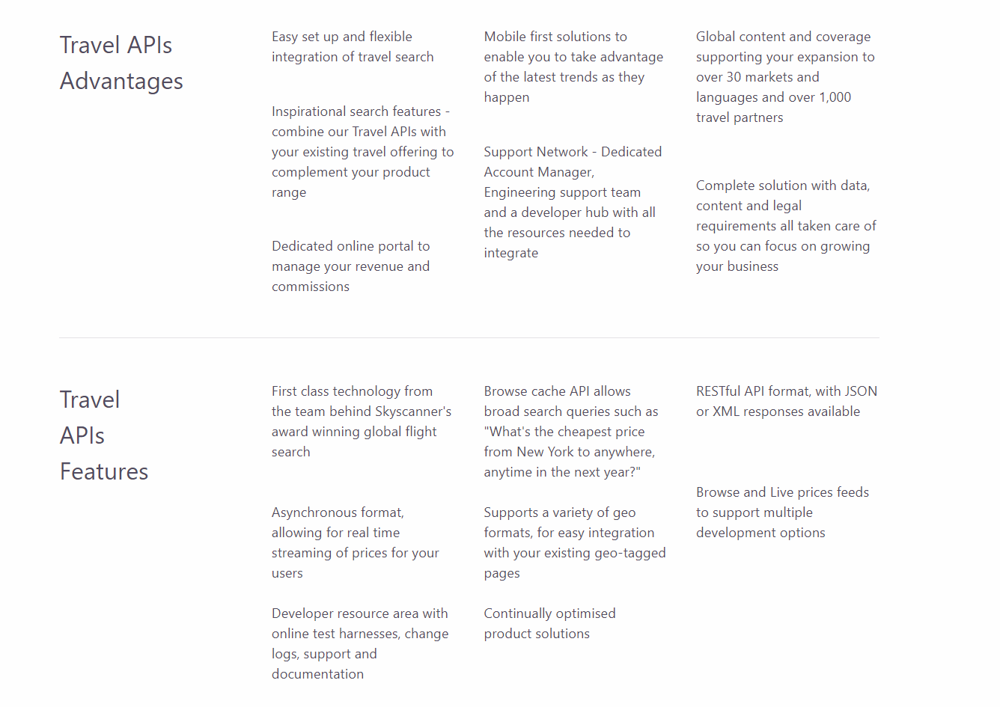
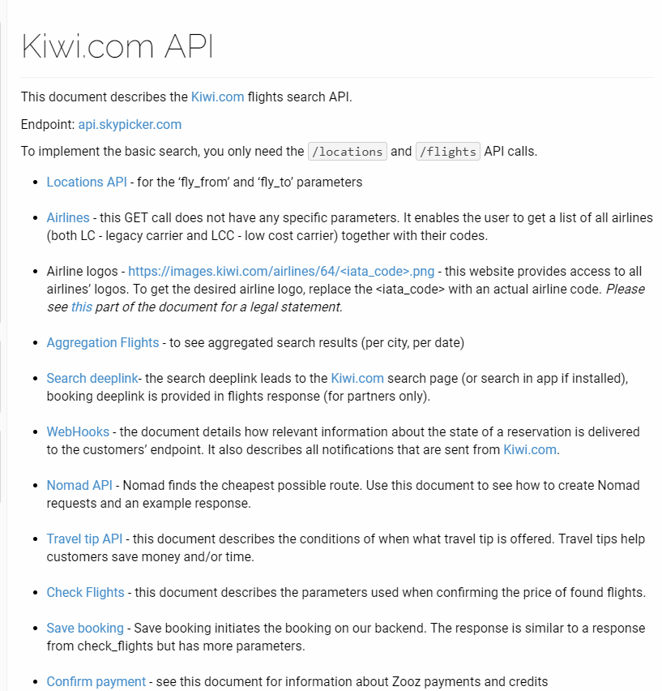
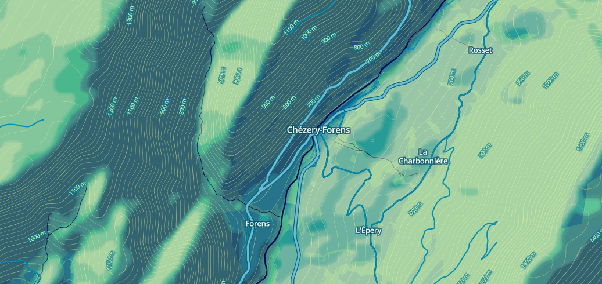

Sometimes you really do need to get away. Escape, part search engine and part research project from students at the MIT Senseable City Laboratory in Singapore, shows you the cheapest flights out of any given city. Just put in a location, and you get color-coded connections to everywhere around the world. This tool helps you to picture the price landscape whenever you felt like taking a holiday. With so many destinations in South East Asia, a map-based approach that can help in exploring the destinations in a fun and intuitive way. The tools gets live prices of the cheapest return flight to each and every city in the world from where you live. It allows you to filter by visa, weather, price, region, direct/indirect to help you narrow down the options. By clicking on a city you can get the entire list of flights to the city.
This started with a simple question: which city is the cheapest. But through user interviews, instead of cheapest, in fact, we are more concerned about affordability, and whether this place is worth my money. For instance, from Singapore to Kuala Lumpur, I only want to pay up to 80 Singapore dollars (normally less than S$80), but I am willing to pay S$350 to Bali (normally less than S$170). Because I have always wanted to go to the beach in Bali, but I have little interest in Kuala Lumpur. One thing we were pretty sure in the beginning is to plot the prices on the map. It’s not only because this is a travel product, but also because of a design decision in terms of data visualization.
The data is retrieved using Skyscanner API and Kiwi API. If you want to know more about them then kindly read their respective documentations.
 deck.gl, Mapbox GL
Maybe change the background layout and add some versatility.